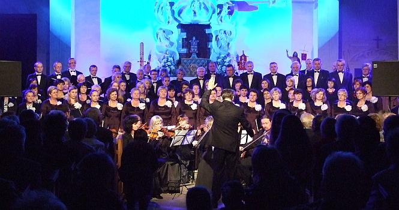

A tymczasem w Cameracie...
.
2014-05-18
Przyjeżdżamy na próbę o 15.30. Ponieważ pogoda niepewna, koncert odbędzie się w kościele. Po próbie czas wolny do rozpoczęcia uroczystości, więc idziemy odpoczywać. O godz. 18.00 Msza Św. Dziękczynna za kanonizację Jana Pawła II.Po mszy szybko ustawiamy instrumenty i wchodzą chóry.

Jako solistka wystąpiła Izabela Szota – sopran,
która również wsparła chóry, jako sopran.
Ponadto w koncercie uczestniczą :Chór dziewczęcy „Ziarenko” pod dyrekcją Elżbiety Gawor wraz z Orkiestrą Dętą „Podstolice” pod batutą Stanisława Gawora.
Dzieci z Przedszkola im. św. Anielii Merici Sióstr Urszulanek w Sierczy.
Schola Dziecięca ze Strumian pod dyrekcją Magdaleny Luraniec. O godz. 21.00 Apel Jasnogórski w oprawie chórów i zespołów uczestniczących w koncercie i na koniec kwiaty oraz podziękowania.

© Stowarzyszenie Muzyczne Chór Camerata Wieliczka
Projekt i wykonanie:  Prowadzenie strony: Małgorzata Wysocka-Cebula
Prowadzenie strony: Małgorzata Wysocka-Cebula